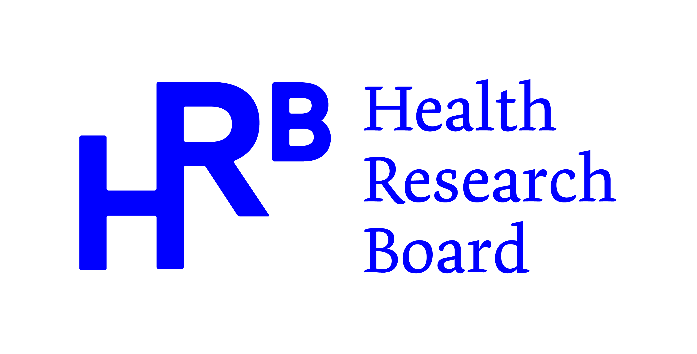

HRB-funded research programme
Fluoride, water and cognitive health across the life course
Examining whether exposure to community water fluoridation across the life course relates to cognitive outcomes in childhood and later life, using two of Ireland's major longitudinal cohorts.
Health Research Board (HRB) funded
TILDA & Growing Up in Ireland data
